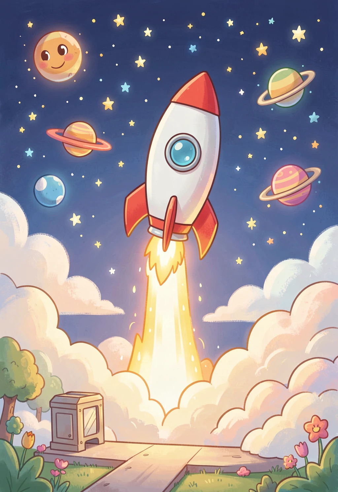
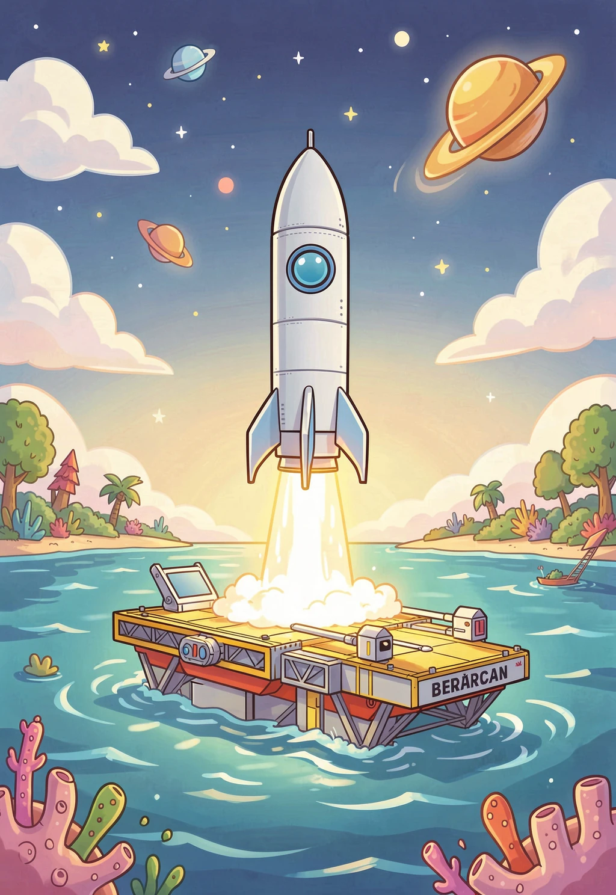
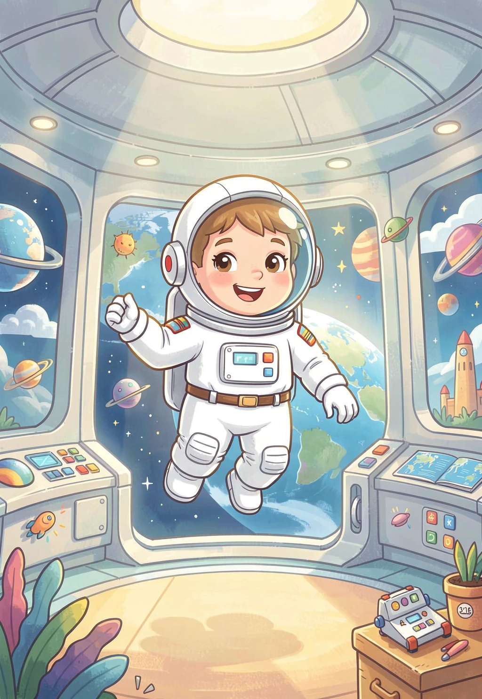
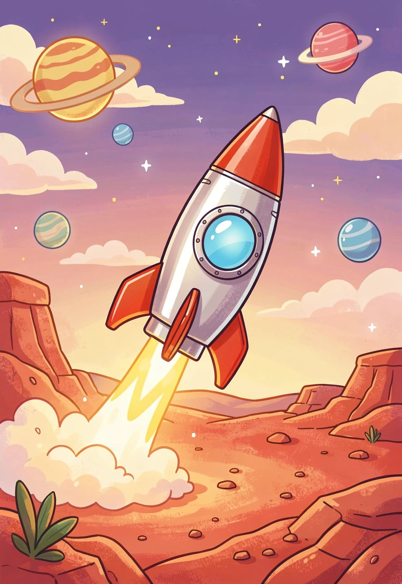
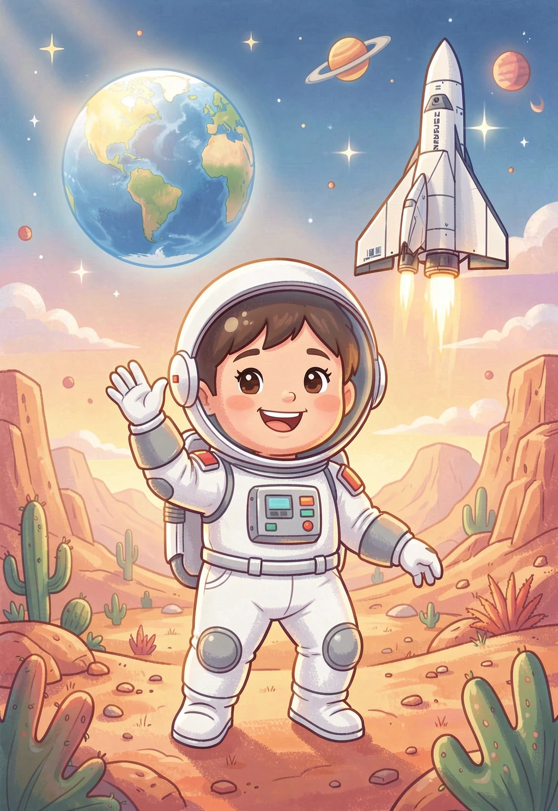

从一个人疯狂的想法，到改变世界的火箭公司
你有没有想过，有一天人类可以像坐飞机一样坐火箭去太空旅行？这件事听起来像是科幻电影里的情节，但有一个人真的在努力把它变成现实——他就是埃隆·马斯克（Elon Musk）。
2002年，马斯克卖掉了他创办的PayPal公司，赚了很多钱。但他没有用这些钱买豪宅跑车，而是做了一个让所有人都觉得"疯了"的决定——他要自己造火箭！要知道，当时全世界只有国家才能造火箭，一个普通人想造火箭？简直是天方夜谭！

SpaceX成立后，马斯克团队设计了一枚叫"猎鹰1号"的小型火箭。2006年3月，猎鹰1号第一次发射——结果刚飞了33秒就爆炸了💥。
2007年3月，第二次发射——火箭飞到了高空，但开始打转，再次失败。2008年8月，第三次发射——火箭分离时出问题，又炸了。
三次失败！马斯克的钱已经快花光了，公司只剩最后一次发射的资金。如果第四次再失败，SpaceX就彻底完了。这是2008年最惊心动魄的时刻。
SpaceX最酷的发明是什么？一定是"火箭回收"！以前的火箭都是一次性的——发射完就扔掉，就像坐出租车到站后把车扔了一样，太浪费了！
马斯克的想法是：火箭能不能像飞机一样，用完之后飞回来，下次再用？2015年12月21日，猎鹰9号火箭的第一级在发射后成功返回地面，稳稳地着陆了！想象一下，一栋20层楼高的火箭，从天上飞回来，然后像一根铅笔一样笔直地站在地面上——这简直太酷了！

更厉害的是，火箭不仅能回到陆地上，还能降落在海上的无人船上！SpaceX把这艘船叫"无人驾驶航天港船"（无人船），只有足球场大小，在波涛汹涌的大海中，火箭要精准地落在甲板上——比投篮还难100倍！
你知道吗？地球上还有大约27亿人上不了互联网！住在偏远山区和海洋上的人们，拉网线太难了。马斯克的解决办法是——从太空发WiFi！
这个计划叫"星链"（Starlink）。SpaceX把成千上万颗小卫星发射到地球轨道上，这些卫星就像一个巨大的"太空WiFi路由器网络"，覆盖整个地球。截至2025年，星链已经有超过7000颗卫星在轨道上运行，为全球100多个国家的400多万用户提供互联网服务！

SpaceX的终极目标是什么？让人类成为"多星球物种"——也就是说，人类不光住在地球上，还要住在火星上！
马斯克为什么要去火星？因为他担心如果地球发生大灾难（比如小行星撞击），人类就可能像恐龙一样灭绝。如果人类能在火星上建立城市，就有了"备份"，人类文明就能延续下去。
为了实现这个目标，SpaceX正在建造一种叫"星舰"（Starship）的超级火箭。星舰是有史以来最大、最强的火箭——高121米，比自由女神像还高！它能一次运送100多人去火星。星舰由不锈钢制造，闪亮亮的外表看起来就像科幻电影里的飞船！


答案：1-B 2-C 3-B 4-B 5-C
SpaceX的故事告诉我们：即使全世界都说你"疯了"，只要坚持梦想，奇迹就可能发生！
也许有一天，你也能坐着星舰去火星旅行呢！🚀
本文章由 AI 助手小龙为小朋友精心制作 🐉